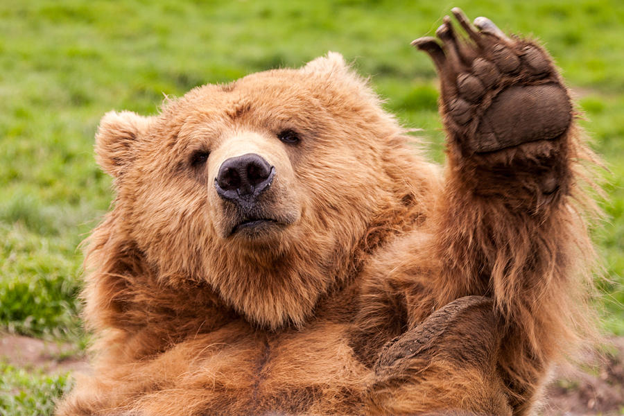

Bear-Don

A protien bowl full of protien fit for bears.
You can really add whatever meats you like. This is mine.
Ingredients
- 8oz cooked chicken breast, shredded or torn into bites
- 2 eggs
- 2 pieces of bacon cut into large bits
- 1 chicken sausage cut into little rounds
- 2oz melty cheese (like Chihuahua)
- Seasonings
- spinach
Instructions
- In a skillet, cook bacon and sausage
- use a paper towel to remove excessive grease
- throw chicken and cheese into pan till heated and melted
- add spinach and mix
- season as desired
- shovel everything into a bowel
- fry eggs
- put the eggs on top of the pile